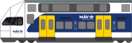
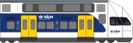

Friss Hireink
Magyar vonatok — rövid ismertetők
A MÁV késik – ahogy mindig

Magyar vonatbalesetek – Monorierdő és Herceghalom

A vonatok történelme
Friss híreink
Magyar vonatok — rövid ismertetők
A MÁV késik – ahogy mindig
Magyar vonatbalesetek
A vonatok történelme
Vonat SVG Forrás